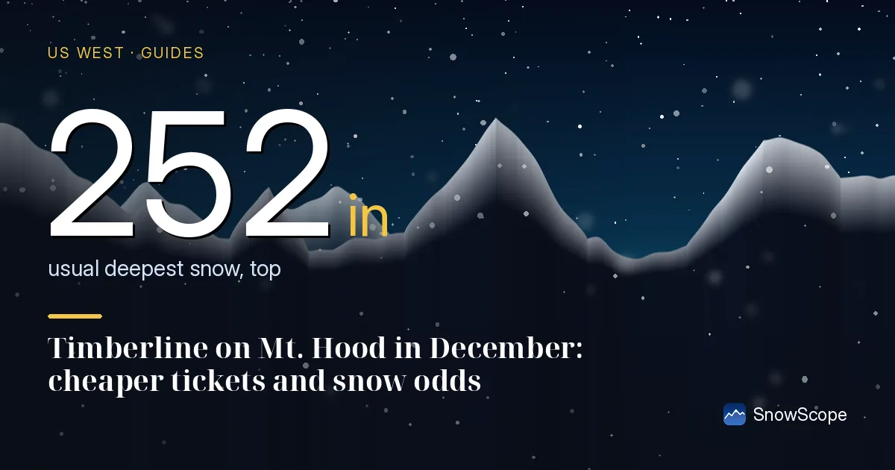

Timberline on Mt. Hood in December: cheaper tickets and snow odds
Timberline Lodge Ski Area sits on Oregon's highest volcano with snow that deepens sharply as you go up. Mid-mountain holds reliable powder in December, and off-peak afternoon tickets cut the cost nearly in half compared with peak days.
See the live snow forecast for Timberline Lodge Ski Area in the SnowScope appSnow depth, powder alerts and the 3D map, free.
Height makes the difference in early winter
Timberline spreads across 1,372 m (4,500 ft) of vertical on Mt. Hood's south side. The base at 3,980 ft (1,214 m) sits in a marginal snow zone in December, but riding up changes everything. By mid-mountain at 6,230 ft (1,900 m) you reach the reliable season; at the top, 8,480 ft (2,586 m), snow is almost always there.
On 15 December, typical depths are 17 in (42 cm) at the base, 52 in (132 cm) at mid-mountain, and 58 in (147 cm) at the top. In 1 of 10 past winters, the base was bare while the upper mountain had good skiing. This is why Timberline has 12 lifts: they let you skip the bottom and work the upper terrain.

When to buy: four ticket prices
Timberline's 2026-27 pricing has clear off-peak and peak rates. A full-day adult ticket (19–64) costs $129 off-peak or $161 on peak days. An afternoon ticket from noon to close runs $96 off-peak or $124 peak. Peak days include all weekends and 21 December to 1 January.
The cheapest option is an off-peak afternoon in early December at $96. A weekday full day early in the month runs $129. If you must ski the holiday week (21 Dec–1 Jan), budget $161 for a full day or $124 for the afternoon. Mid-December weekdays offer the best balance of price and reliability.

How often does mid-mountain have good snow?
At 6,230 ft (1,900 m), good snow (a weekly mean of 50 cm or more) appears in 76 % of winters in the first week of December, 74 % in the second week, and 85 % in each of the two weeks before New Year. These odds improve as the season goes on.
The spread between good and lean winters is wide. On 15 December, one winter in ten had only 26 cm (10 in) of snow at mid-mountain, while one in ten had 281 cm (111 in). Last season was notably lean on that date—the mountain started without snow—so it can happen. Upper slopes stay more reliable: on 15 December, 80 % of winters had 50 cm or more at the top.
How it stacks against White Pass and Mt. Bachelor
White Pass in Washington, 60 miles north, sells online from $69 off-peak to $119 peak. Its mid-mountain typical depth on 15 December is 102 cm (40 in), with good snow in 87 % of winters. Mt. Bachelor near Bend, Oregon, sits higher and receives more snow: 139 cm (55 in) on a typical 15 December, good in 83 % of winters.
Timberline's mid-mountain at 132 cm (52 in) on 15 December sits between them in snow depth. For pure December snow, Mt. Bachelor leads slightly, but Timberline undercuts both on ticket cost if you book off-peak weekdays early in the month. White Pass wins on price if you buy far in advance.
What the upper slopes show
The top of Timberline at 8,480 ft (2,586 m) is where December snow reliability becomes very high. On 15 December, the typical depth is 147 cm (58 in), and good snow appears in 80 % of winters. By Christmas Day, the typical depth reaches 185 cm (73 in), and by New Year's Eve it hits 228 cm (90 in).
In a lean winter (one in ten), even the top had only 103 cm (40 in) on 15 December. In a big winter, the top held 310 cm (122 in). If you ski the upper slopes and avoid the base lifts, mid-December and later is very solid.
Planning your trip
Book an off-peak afternoon in the first three weeks of December to blend low cost and good odds. Ride the high-speed lifts straight to mid-mountain or the top; ignore the base in early season. By Christmas week, the entire mountain has reliable snow at all heights, but expect peak pricing and crowds.
US-26 from Portland climbs to Government Camp at about 6,000 ft (1,829 m); chains may be required even when the ski area is open. Check the road forecast before you leave. The snow map will tell you whether this is a big-snow or lean-snow December, and you can plan your height strategy accordingly.
Tips for skiers
- Ski a weekday afternoon in the first two weeks of December at the $96 off-peak rate; the upper mountain has good snow odds and you dodge holiday crowds.
- Start your day at mid-mountain or the top—the base lifts serve thin snow in early December. Save the lower runs for late season.
- Expect one winter in ten to start very lean at the base. If you arrive to bare ground, ride to 6,230 ft (1,900 m) or higher where snow is more certain.
- Carry chains and check US-26 road conditions before driving from Portland; Government Camp sits at 6,000 ft (1,829 m) and snow there is common in December.
- Consult the SnowScope snow map in the week before your trip to see whether this December is tracking as a big-snow or lean-snow winter; the range is large.
About these numbers
Resort snow depths are the deepest snow on the resort's upper slopes on the date shown; they are estimates for an area, not a measurement at one point. Forecasts can change. Always read the official avalanche bulletin before going off-piste.
Official avalanche bulletins: avalanche.org (US national portal)
Cite this report
For research, teaching or the press: the numbers and charts are free to reuse under CC BY 4.0 with this citation.
SnowScope (2026), Timberline on Mt. Hood in December: cheaper tickets and snow odds, https://snowscope.app/blog/en/2026/11/timberline-mt-hood-december-ski-on-a-budget.html, accessed 2026-11-15
SnowScope (Atlas Labs). (2026, November 15). Timberline on Mt. Hood in December: cheaper tickets and snow odds. SnowScope snow reports. https://snowscope.app/blog/en/2026/11/timberline-mt-hood-december-ski-on-a-budget.html
BibTeX
@misc{snowscope2026timberlinemthooddecember,
author = {{SnowScope (Atlas Labs)}},
title = {Timberline on Mt. Hood in December: cheaper tickets and snow odds},
year = {2026},
month = nov,
howpublished = {\url{https://snowscope.app/blog/en/2026/11/timberline-mt-hood-december-ski-on-a-budget.html}},
note = {Published 2026-11-15 09:34 UTC; accessed 2026-11-15}
}· CC BY 4.0 · Methods, data and tools →
Timberline Lodge Ski Area: snow and temperature by height, this winter vs last (tools) →
Follow Timberline Lodge Ski Area
Free: a message when fresh snow is coming, and the forecast every morning.
More snow reports

The National Weather Service expects 10 to 20 inches in the Wasatch from Thursday to Saturday. Where Utah's snowpack stands against past winters, why Utah snow is lighter, and when to ski.

Seasonal outlook for the Rockies: warmer December ahead, near-normal snow, but north leans leaner while Colorado and Utah remain undecided. Data from 10 November 2026.